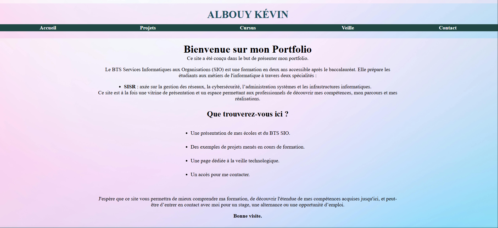

Mes Projets
Voici quelques-uns des projets personnels sur lesquels j’ai travaillé :
Projet 1 : Mon portfolio
Portfolio que vous êtes en train de consulter. Il a été conçu pour présenter mes compétences, mon parcours et mes réalisations dans le domaine de l'informatique. Il est construit en HTML et CSS, avec une attention particulière portée à l'ergonomie et à l'esthétique. Ce site est un exemple de mon travail et de ma capacité à créer des interfaces web attrayantes et fonctionnelles.


Projet 2 : Mise en place d'un serveur
J'ai mis en place deux machines virtuelles avec VmWare : une sous Windows Server 2022 et une cliente sous Windows 11. J'ai relié les deux comptes au sein d'un domaine Active Directory, puis j'ai créé des unités d'organisation (OU) et assigné des stratégies de groupe (GPO) pour gérer les droits et la configuration des utilisateurs.


Projet 3 : Jeu Vidéo
Description du projet 3.